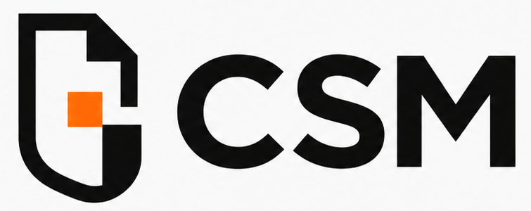

Użyj tych przycisków tylko wtedy, gdy chcesz sprawdzić stan panelu albo odświeżyć informacje o bieżącym dokumencie.
Bielik to opcjonalne, głębsze sprawdzenie lokalnym modelem AI. Może pomóc wykryć trudniejsze nazwy osób, projektów, firm lub aliasów, których standardowy silnik mógł nie rozpoznać.
Dokument nie jest wysyłany poza komputer. Sprawdzenie może potrwać dłużej i nie zastępuje ręcznej kontroli dokumentu.
Sprawdzanie statusu...
Tu możesz dopisać własne wyjątki dla konkretnej sprawy. Reguły zostają lokalnie na komputerze, ale mogą zawierać jawne dane — nie wysyłaj ich dalej.
Najprościej dodawać reguły klikając przyciski przy pozycjach na liście ukrytych danych (poniżej wyniku anonimizacji). Wszystkie aktualne reguły widać na listach poniżej — każdą można pojedynczo usunąć.
Poniższe pola to ta sama treść co listy powyżej, tyle że w formie tekstowej — jedna reguła w linii. Przydatne do hurtowej edycji lub sklejenia z pliku roboczego.
Import i eksport TXT służy do prostego przekazania wyjątków, np. w pliku roboczym od prawnika. Plik może zawierać jawne dane.
Użyj tylko wtedy, gdy standardowe przywracanie nie działa.
Oprogramowanie darmowe. Korzystanie oznacza akceptację pełnej licencji.
LICENCJA OTWARTA CSM
Wersja 1.0, 2025
Copyright © 2024–2025 Kancelaria Prawna Kantorowski, Głąb i Wspólnicy Sp.j.
ul. Baczyńskiego 6B, Rzeszów
KRS: 0000897641 | NIP: 5170383178 | REGON: 367784460
(dalej: „Licencjodawca")
========================================================================
§ 1. DEFINICJE
1. „Oprogramowanie" — program CSM for Word w wersji
udostępnionej przez Licencjodawcę, obejmującej kod źródłowy, pliki
konfiguracyjne, skrypty, dokumentację, pliki zasobów (ikony, loga)
oraz wszelkie inne elementy wchodzące w skład dystrybucji.
2. „Licencjobiorca" — każda osoba fizyczna lub prawna, która uzyskała
dostęp do Oprogramowania i korzysta z niego na warunkach niniejszej
Licencji.
3. „Modyfikacja" — każda zmiana kodu źródłowego Oprogramowania, w tym
poprawki błędów, rozszerzenia funkcjonalności, adaptacje, porty
oraz utwory zależne bazujące na Oprogramowaniu w całości lub
w części.
4. „Dystrybucja" — udostępnienie Oprogramowania lub jego Modyfikacji
osobom trzecim, niezależnie od formy (fizyczna kopia, pobieranie
online, przesyłanie pomiędzy podmiotami, udostępnienie jako usługa).
========================================================================
§ 2. UDZIELENIE LICENCJI
1. Licencjodawca udziela Licencjobiorcy nieodpłatnej, niewyłącznej,
nieograniczonej terytorialnie licencji na korzystanie z
Oprogramowania, w tym na:
a) uruchamianie i użytkowanie Oprogramowania w dowolnym celu,
w tym komercyjnym;
b) kopiowanie i rozpowszechnianie Oprogramowania;
c) analizę, badanie i dekompilację kodu źródłowego;
d) tworzenie Modyfikacji.
2. Licencja jest udzielana na czas nieoznaczony. Licencjodawca może
wypowiedzieć licencję w przypadku naruszenia jej warunków przez
Licencjobiorcę, z zachowaniem 30-dniowego terminu na usunięcie
naruszenia.
========================================================================
§ 3. COPYLEFT — WARUNKI MODYFIKACJI I DYSTRYBUCJI
1. Licencjobiorca może tworzyć i rozpowszechniać Modyfikacje wyłącznie
pod warunkiem, że:
a) Modyfikacja jest udostępniana na warunkach identycznych
z niniejszą Licencją (copyleft);
b) Modyfikacja zawiera wyraźne oznaczenie, że stanowi zmienioną
wersję Oprogramowania, z podaniem autora Modyfikacji i daty
zmiany;
c) Modyfikacja jest udostępniana łącznie z pełnym kodem źródłowym,
w formie umożliwiającej dalszą modyfikację.
2. Przy każdej Dystrybucji Oprogramowania lub jego Modyfikacji
Licencjobiorca jest zobowiązany dołączyć pełny tekst niniejszej
Licencji.
========================================================================
§ 4. PRZESYŁANIE MODYFIKACJI LICENCJODAWCY
1. W przypadku stworzenia jakiejkolwiek Modyfikacji Licencjobiorca
jest zobowiązany przesłać Licencjodawcy kopię Modyfikacji
w rozsądnym terminie (nie dłuższym niż 30 dni od pierwszej
Dystrybucji Modyfikacji), na adres e-mail: kontakt@kancelariakantorowski.pl
lub inny adres wskazany przez Licencjodawcę na jego stronie
internetowej.
2. Przesyłając Modyfikację, Licencjobiorca udziela Licencjodawcy
nieodpłatnej, niewyłącznej, nieograniczonej terytorialnie
i czasowo licencji na korzystanie z przesłanej Modyfikacji,
w tym na:
a) włączenie Modyfikacji do Oprogramowania;
b) modyfikowanie Modyfikacji;
c) rozpowszechnianie Modyfikacji (samodzielnie lub jako część
Oprogramowania) na warunkach niniejszej Licencji lub innej
licencji wybranej przez Licencjodawcę dla przyszłych wersji
Oprogramowania;
d) komercyjne wykorzystanie Modyfikacji.
3. Licencjobiorca zachowuje wszelkie prawa autorskie do przesłanej
Modyfikacji i może z niej korzystać również niezależnie
od Oprogramowania.
========================================================================
§ 5. WYŁĄCZENIE ODPOWIEDZIALNOŚCI
1. OPROGRAMOWANIE JEST UDOSTĘPNIANE W STANIE „TAK JAK JEST"
(AS IS), BEZ JAKICHKOLWIEK GWARANCJI, W TYM BEZ GWARANCJI
PRZYDATNOŚCI DO OKREŚLONEGO CELU, GWARANCJI POPRAWNOŚCI
DZIAŁANIA, GWARANCJI KOMPLETNOŚCI ANI GWARANCJI BRAKU
NARUSZENIA PRAW OSÓB TRZECICH.
2. W najszerszym zakresie dozwolonym przez bezwzględnie obowiązujące
przepisy prawa, Licencjodawca nie ponosi odpowiedzialności za
jakiekolwiek szkody wynikające z korzystania z Oprogramowania
lub niemożności korzystania z niego, w szczególności za:
a) utratę danych, dokumentów lub ich uszkodzenie;
b) niekompletną lub nieprawidłową pseudonimizację;
c) ujawnienie danych poufnych pomimo zastosowania Oprogramowania;
d) szkody wynikające z błędów, przerw w działaniu lub
niezgodności z konkretną wersją Microsoft Word, Office 365
lub systemem operacyjnym;
e) szkody pośrednie, wtórne, przypadkowe, moralne lub o charakterze
kary (punitive damages), utratę zysków, utratę renomy lub
utratę klientów;
f) działania osób trzecich, w tym modyfikacje Oprogramowania
dokonane przez Licencjobiorcę lub osoby trzecie.
3. Licencjobiorca korzysta z Oprogramowania na własną
odpowiedzialność i powinien każdorazowo zweryfikować wynik
pseudonimizacji przed przekazaniem dokumentu do przetwarzania
przez modele AI (w tym Claude for Word) lub przed udostępnieniem
dokumentu osobom trzecim.
4. Oprogramowanie jest narzędziem wspomagającym i nie zastępuje
ręcznej kontroli dokumentu przez Licencjobiorcę. Licencjobiorca
jest jedynym podmiotem odpowiedzialnym za przestrzeganie
obowiązujących przepisów o ochronie danych osobowych (RODO),
tajemnicy zawodowej i poufności.
5. Skuteczność wykrywania danych podlegających pseudonimizacji zależy
od treści konkretnego dokumentu, wybranej wersji modelu Bielik oraz
parametrów sprzętowych komputera, na którym Oprogramowanie jest
uruchamiane. Żadna z tych konfiguracji nie gwarantuje wykrycia
wszystkich danych osobowych lub informacji objętych tajemnicą
zawodową.
6. Z tego względu Licencjobiorca zobowiązuje się każdorazowo
przeanalizować dokument po pseudonimizacji przed jego przekazaniem
do modelu językowego (LLM). Ujawnienie danych osobowych lub
informacji objętych tajemnicą zawodową wskutek zaniechania tej
analizy stanowi wyłącznie skutek decyzji Licencjobiorcy, za który
Licencjodawca nie ponosi odpowiedzialności.
========================================================================
§ 6. ZNAKI TOWAROWE I OZNACZENIA
1. Niniejsza Licencja nie udziela prawa do używania nazw
handlowych, znaków towarowych ani oznaczeń Licencjodawcy
(w tym „Kantorowski, Głąb i Wspólnicy", „CSM",
logotypów), z wyjątkiem:
a) oznaczenia autorstwa Oprogramowania w informacji o licencji;
b) informacji, że Modyfikacja bazuje na Oprogramowaniu
Licencjodawcy.
========================================================================
§ 7. POSTANOWIENIA KOŃCOWE
1. Niniejsza Licencja podlega prawu polskiemu.
2. W sprawach nieuregulowanych niniejszą Licencją zastosowanie mają
przepisy ustawy z dnia 4 lutego 1994 r. o prawie autorskim
i prawach pokrewnych, Kodeksu cywilnego oraz innych właściwych
aktów prawnych.
3. Ewentualne spory rozstrzygane będą przez sąd właściwy dla
siedziby Licencjodawcy.
4. Jeżeli jakiekolwiek postanowienie niniejszej Licencji okaże się
nieważne lub niewykonalne, pozostałe postanowienia pozostają
w mocy, a nieważne postanowienie będzie interpretowane w sposób
możliwie najbliższy jego pierwotnemu celowi.
5. Korzystanie z Oprogramowania oznacza akceptację warunków
niniejszej Licencji.
========================================================================
CSM zwykle uruchamia się sam. Tych opcji używaj tylko przy problemach technicznych albo na prośbę wsparcia.